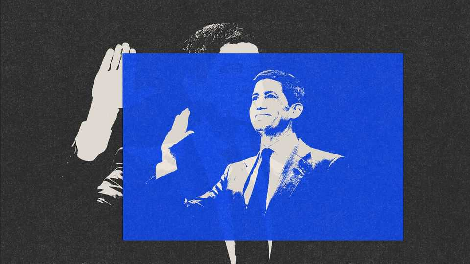
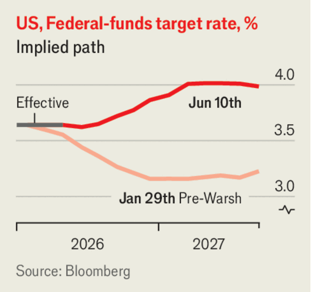

The Federal Reserve must soon give Donald Trump bad news
Kevin Warsh, the unlucky new chairman, has seen his case for lower interest rates disintegrate
June 11th 2026

FOR MOST of Kevin Warsh’s career, becoming chair of the Federal Reserve with the American economy hot and in need of higher interest rates would have been the stuff of professional nirvana. Few central bankers had staked out so hawkish a reputation. So it is ironic that this scenario has come to pass, yet it seems likely to make Mr Warsh’s life miserable as he starts at the Fed.
For that, he can thank the circumstances of his appointment. President Donald Trump wants lower interest rates, and appointed Mr Warsh in January because he, too, favoured them. Back then, the economic case for looser money was respectable: the post-pandemic inflation surge had been all but killed, and the jobs market looked like it was wobbling. Mr Warsh’s out-of-character doveishness provoked wry smiles but not scorn from other central bankers, most of whom were glad that Mr Trump had picked someone sane for the job.

Alas, the happy coincidence is over. The case for lower interest rates has crumbled. Mr Trump still wants rate cuts but, if anything, today’s economic conditions demand tighter money.
Since Mr Warsh’s appointment America’s labour market has firmed up. From March to May payrolls swelled by an average of 188,000 per month, far above estimates of growth in the labour force at a time when migration is low or negative. Until November the unemployment rate had been gently rising; it has since fallen and held steady at 4.3%. The economy is exuberant. Stock markets are near record highs, as a sugar-high from tax cuts collides with excitement about artificial intelligence. The Atlanta Fed’s real-time GDP gauge puts growth at a 3.3% annualised pace in the second quarter.
Higher oil prices, the result of Mr Trump’s war with Iran, have pushed up annual inflation, to 4.2% in May, a three-year high. Often central bankers ignore inflation that comes from oil prices. That is difficult today because inflation has exceeded the Fed’s target for more than five years. Overshoots could get baked into the public’s expectations. Inflation that started with oil could take on a life of its own.
The novel arguments Mr Warsh has advanced for lower interest rates look shakier than ever. While vying for Mr Trump’s nomination, he claimed that he had ditched his career-long hawkishness because of advances in AI. The technology would soon unleash such abundance, he argued, that inflation would be vanquished, leaving the Fed plenty of space to cut interest rates.
So far, something closer to the reverse has happened. Stock-market euphoria and the boom in data-centre construction have stoked America’s consumption and investment respectively and probably raised inflation. And Mr Warsh’s new colleagues have lined up to remind the incoming chair that if AI lifts productivity growth, economic theory suggests interest rates would need to go up, not down, thanks to stronger appetites for spending and investment. About half of the Fed’s voting rate-setters, whose support Mr Warsh needs to change policy, have now made versions of these points in public.
Mr Warsh’s other big idea was to cut the Fed’s bond holdings, which would amount to a tightening of monetary policy through the balance-sheet. Doing so would open up space to reduce interest rates at the same time, he argued, akin to keeping your office comfortable by turning on the heating and air-conditioning at the same time.
But the effect of this quantitative tightening (qt) would be piddling. Stephen Miran, a former Fed governor and an ally of Mr Warsh, has entertained shrinking the balance-sheet by about 5% of GDP. Rules of thumb suggest that would lift long-term bond yields by roughly the same amount as just one quarter-of-a-percentage-point interest-rate rise. And even that is probably an overestimate. Bond-buying works in part by signalling where interest rates are heading. For example, after the global financial crisis of 2007-09 it conveyed that rates would not rise for a long time. Under Mr Warsh’s scheme, by contrast, the balance-sheet and rates would pull in opposite directions. QT would presage lower rates, and so might not raise long-term bond yields.
Interest-rate cuts should be firmly off the table when Mr Warsh kicks off his first monetary-policy meeting on June 16th. The new chair has some ability to play for time and concentrate on a list of nerdy reforms he wants to make at the Fed. But if rates move later this year, it is likely to be up, not down. At some point Mr Warsh will have to give Mr Trump bad news. ■
Subscribers to The Economist can sign up to our Opinion newsletter, which brings together the best of our leaders, columns, guest essays and reader correspondence.